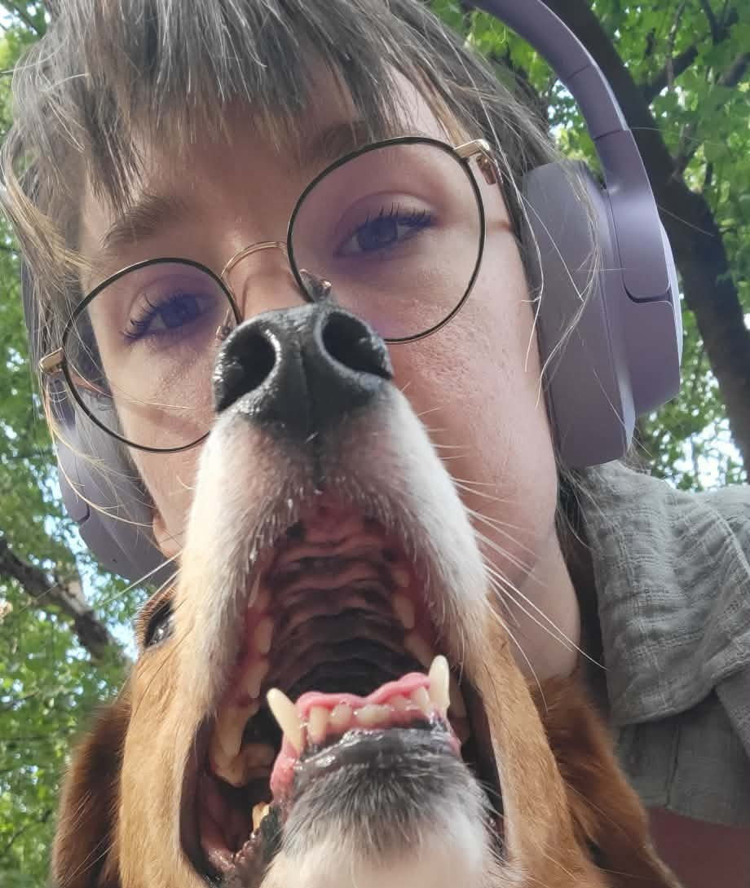
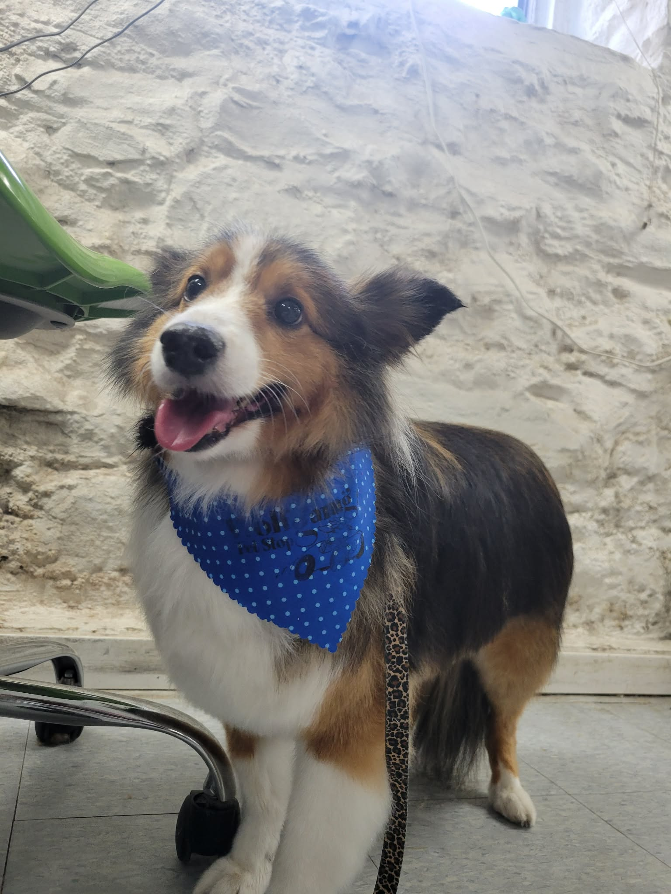
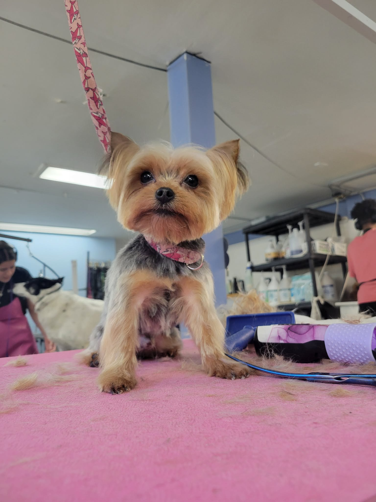
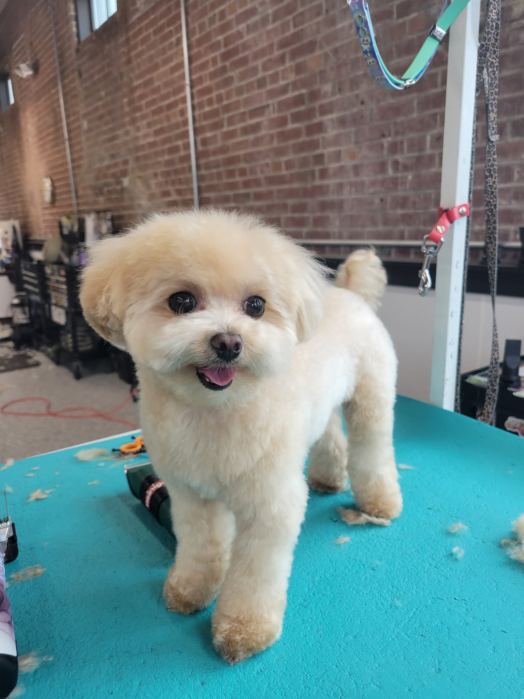
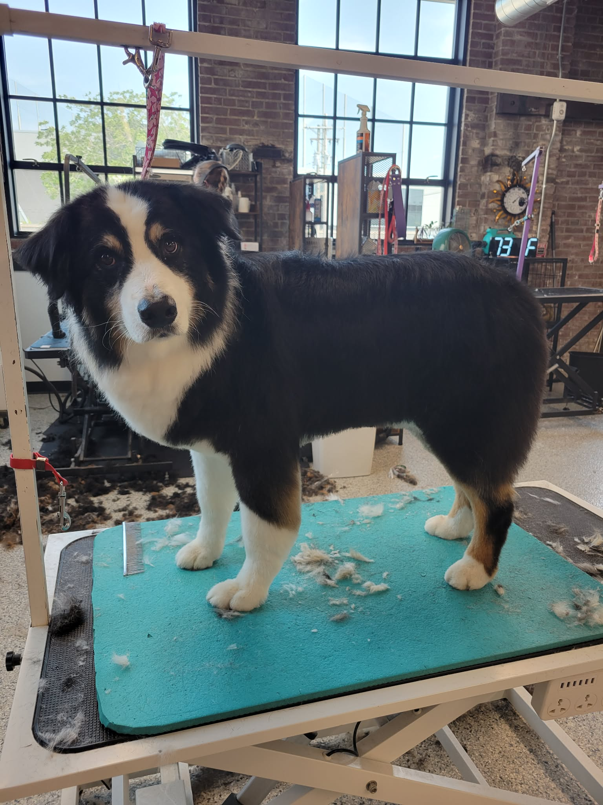
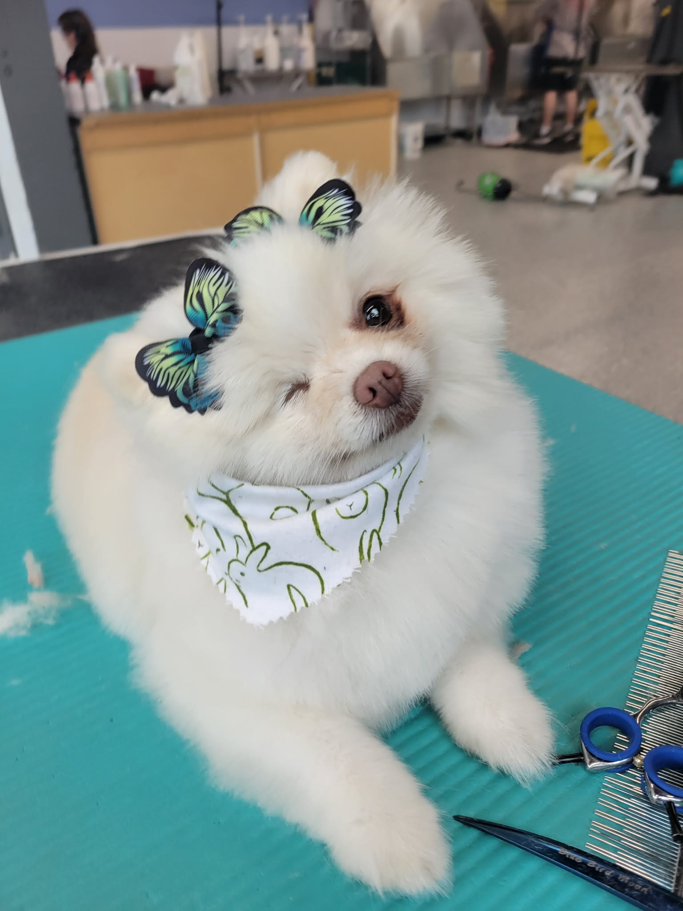

Currently servicing the St. Louis/IL Area
Kacey Yount has been grooming dogs throughout the Illinois and Missouri area for 7 years. She got her start at PetSmart, where she built the foundation of skills that shaped her into the groomer she is today, and now brings that experience to Wolfgang's Pet Stop. Kacey has a soft spot for asian fusion cuts, blending creativity and precision into every trim, and she especially loves working with double coated breeds, understanding the extra care and technique their coats call for. Looking ahead, she's working toward completing a National Certified Master Groomer certification as she continues to grow her craft.

A look at some of my favorite grooms.

Full Groom

Bath & Tidy

Puppy's First Cut
Drag the slider to see the transformation.
I specialize in double-coated breeds Huskies, Shepherds, Goldens, and the like with careful de shedding and hand scissoring that keeps their coat healthy instead of just cutting corners.
Every groom moves at the dog's pace, whether that's a nervous rescue who needs extra patience or a puppy getting their very first cut


Soon
Soon
Soon